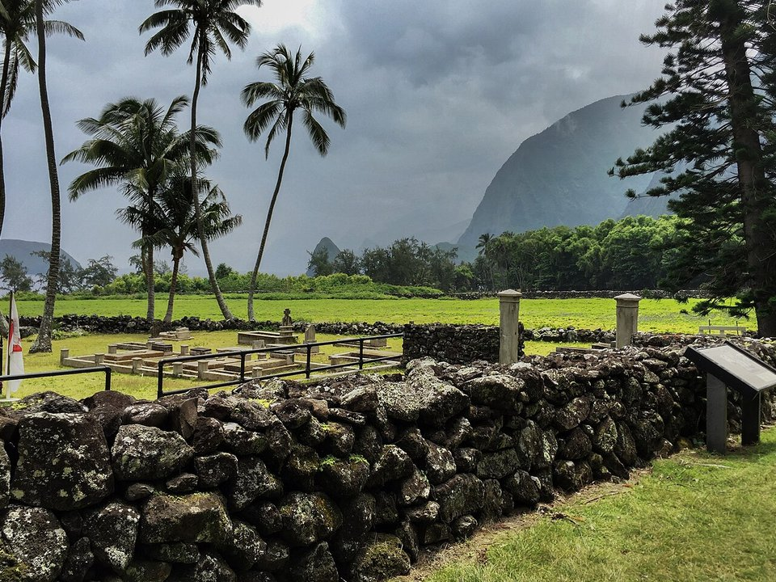

Kaunakakai · Seaside hotel
Hotel Molokai
Polynesian-style bungalows on the water.
Official details for Hotel MolokaiOld Hawaii, unhurried.
Molokai is the least developed of the main islands, a place of fishponds, ranches and small towns where most people are Native Hawaiian. Land at Molokai Airport, stay at the seaside Hotel Molokai, look down from Palaau State Park onto the Kalaupapa peninsula and the world’s tallest sea cliffs, and drive the east end to Halawa Valley.

Time illustration: direct distance at 150 KTAS plus 15 minutes for departure and arrival, matching the discovery page. Use ForeFlight for your actual flight plan.
PHMK (MKK), Molokai, is a part-time towered state airport at 454 feet with a 4,494-foot main runway, about 15 minutes from Kaunakakai.
Molokai Airport, Kaunakakai, HI
No fuel listed. A 1,280-foot mountain lies 2.8 nm off the Runway 5 threshold, and terrain rises quickly; egrets and pigeons near the field. Kalaupapa (PHLU) requires a state permit to enter and visitors must be on a guided tour. (FAA chart supplement and NPS.)
Hawaiian flying: steady trade winds with strong gusts and mechanical turbulence near terrain and in the channels between islands, afternoon showers and low clouds over the mountains, sudden obscuration in valleys, and long over-water legs. Carry life vests and consider a raft. Hawaii is about 2,100 nm of open ocean from California, beyond the range of most light aircraft. These guides are for Hawaii-based pilots and for visitors who rent or fly with a local operator, typically from Honolulu (PHNL), Kalaeloa (PHJR) or Kahului (PHOG).
Rates and availability need travel dates.
Polynesian-style bungalows on the water.
Official details for Hotel MolokaiPrices and availability for your dates, through our partner Stay22. This is an affiliate link: we may earn a commission at no cost to you. The picks above are never paid.
Reserve weekend dinners.
Island cooking by the water at the hotel.
Official details for Hotel Molokai restaurantCafés and the bakery in Kaunakakai.
Hawaii Tourism for More foodRespect local customs and private land.
View the peninsula and the tallest sea cliffs from Palaau State Park.
Hawaii State ParksThe former Hansen’s disease settlement; permits and guided tours required.
NPSThis prototype links to the local visitor site. It does not yet match events to your travel dates.
A hula festival honoring the island as hula’s birthplace.
Hawaii Tourism for Molokai Ka Hula PikoMild, uncrowded weather.
Hawaii Tourism for Quiet islandHumpbacks offshore.
Hawaii Tourism for Whale seasonCheck the local calendar when choosing a weekend, and confirm dates and tickets with the organizer.
A sample Molokai weekend. Written for Hawaii-based pilots and visitors already in the islands. No bookings or availability confirmed.
Land at PHMK mid-morning.
The Kalaupapa lookout at Palaau State Park.
Kaunakakai, then back to the airport.
Land at PHMK, subject to weather and your actual flight plan.
Kaunakakai and the wharf.
Dinner at the hotel.
The Kalaupapa lookout.
The east end toward Halawa.
Sunset at the hotel.
A quiet morning by the water.
Allow time at the airport.
Trade-wind showers build over the mountains in the afternoon; plan around them.
The east end toward Halawa.
The wharf.
Dinner at Hotel Molokai.
These details make the difference between an appealing list and a usable getaway.
Hotel and car; Kalaupapa tour if wanted.
None listed; fuel elsewhere.
Rising terrain near the runway.
Year-round.
Picks and links reviewed by WingAway Weekends. Hours, prices, menus and availability change often, so confirm directly with each place before booking. Spotted something out of date, or have a favorite we missed? Email us at hello@wingawayweekends.com.
WingAway Weekends helps you discover the destination. Use ForeFlight and current official aviation information for route, performance, weather, NOTAMs and preflight decisions. Flight planning and PIC responsibility stay with the pilot.
One fly-in weekend, a Fly to Lunch pick and the newest guides, about once a month.
Free. Unsubscribe anytime.